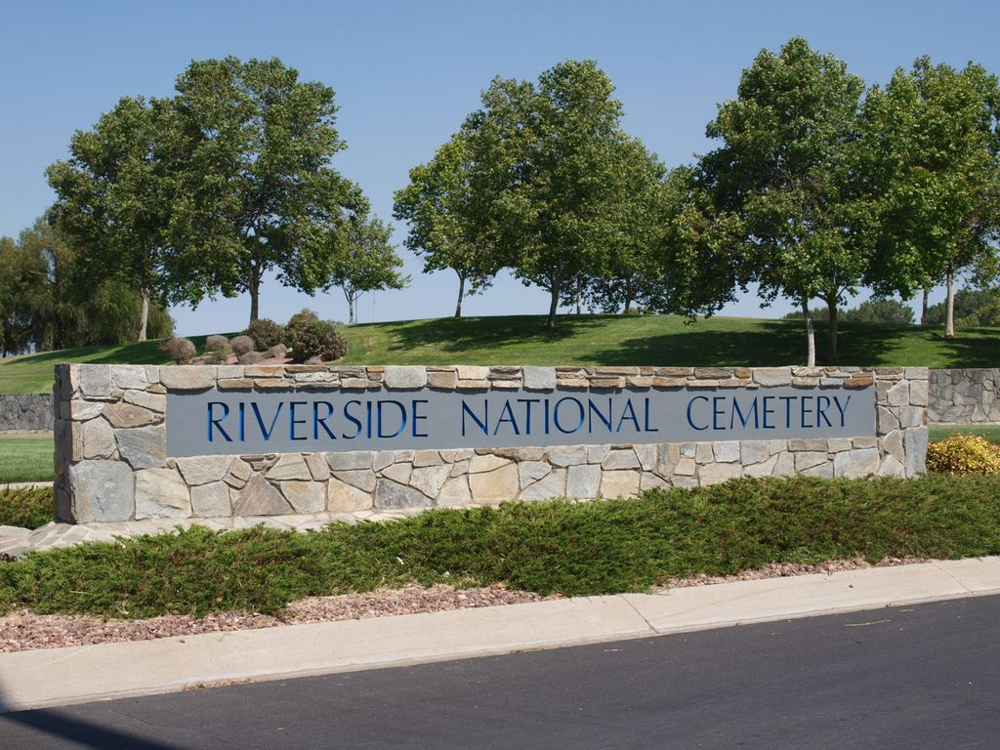
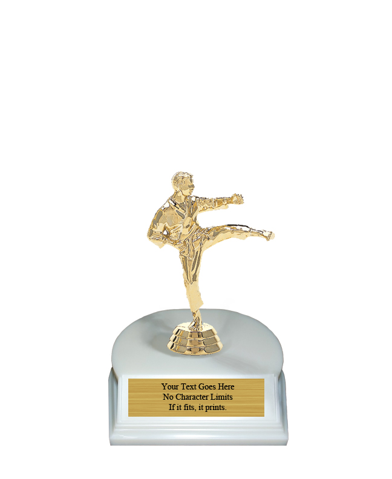
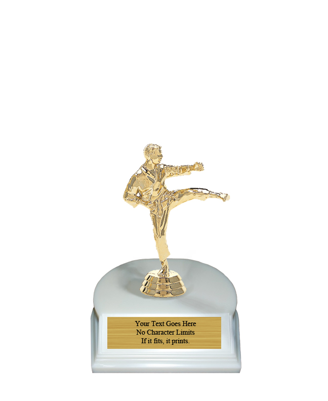

Lucas Martinez
Hello Everyone! My name is Lucas Martinez and I am 21 years old. I am a full-time Assistant Research Coordinator at the UC Riverside Brain Game Center. Living in Riverside my entire life has been a blessing because I had the opportunity to work in this particular field while being close to home and still being around the ones I cherish the most.Let me tell you a little bit about myself. I live at home with an older sister, my mom, my dad, two dogs, and a cat. I love playing videogames like Rocket League, Call of Duty, Mario Kart, and many more. I like watching movies/TV shows, but what I love the most is listening to music. Music has changed me as a person. The two main genres I listen to is rap and pop. My top artists right now are Frank Ocean, The Weeknd, Kendrick Lamar, and Tyler the Creator. I am currently expanding my music taste by listening to different genres. That is how much I love music.
As a young coordinator, it is uncommon for someone like me to get a position like this since those with more experience are often preferred. However, my bosses realized how much hard work I had done and stayed as diligent as possible, which allowed me to be qualified for such positions because that is who I am. Even back in my high school days, I stayed on top of everything and completed every assignment far before the deadline. I was registered in many AP and Honors classes so the workload would pile up very quickly, but I still found a way to complete everything. The downside of being academically invested was that I had no social life. If I could go back in time and put the books aside and spend more time outside with friends, I would do that in a heartbeat. I would go on social media and look at mutual friends" Instagram stories and see that they're living their best life going to concerts, theme parks, the beach, etc. and it didn't make me feel like I was missing out on much at the time.
Now, as a college student, all these emotions are catching up to me. As someone who is at that age where you're supposed to be experiencing life, I sat in my room studying, working on homework, and a little bit of YouTube once I had free time, but it did not happen often. It started to take a heavy toll on me because I felt like I was drifting apart from my social life and I did not want that to happen. My parents, who have been supportive no matter what, started to become concerned. They wanted to me take a break too and I refused. I should have listened to them. I guess it is not too late to have fun, right? Alright, enough of the therapy session. I hope that I have given you an exceptional first impression and welcome!
Experience
President of the UCR Karate Club
• Assign officers every school year
• coordinator for annual UCR Karate tournament
• No experience required to join
Participant
• Responsible for completing different tasks using only your peripheral vision while central vision is partially blocked
• Attend every training session and MRI session
Contributor to Along the Chapparal Project
• Write a short story about a veteran who has passed away and buried at the Riverside National Cemetary
• Recognizes those whose story has not been exposed to the general public
• Published in a book filled many life-changing stories
• Over 400 students worked on this project and only 100 were selected
Education
UC Riverside
Portfolio



